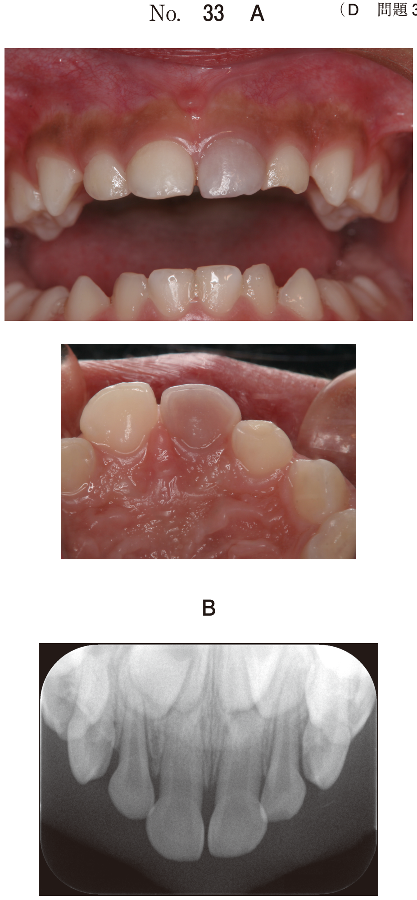

顎関節脱臼
定義
下顎頭が関節可動域を超えて下顎窩から逸脱し、自力で整復できなくなった状態。
誘因と素因
誘因（きっかけ）
- あくび、歯科治療時や全身麻酔による大開口
- 長期臼歯部欠損、交叉咬合などの咬合不全
- 関節突起骨折
- 脳梗塞やくも膜下出血などの脳血管障害による運動麻痺
- Parkinson病の錐体外路症状による筋の不調和
- てんかん
素因（なりやすい条件）
- 平坦な下顎頭・関節結節（前方が急峻な傾斜）
- 下顎角が開大したlong face
- 関節包・靭帯の弛緩
- 円板後部組織の伸展と弛緩
- 加齢変化
症状
- 閉口困難（閉口不能）
- 耳珠前方部の陥凹
- 流涎
- 発音・会話・嚥下障害
- 顎関節部痛
- 顔貌の伸長化、両側鼻唇溝の消失
- パノラマX線写真：下顎頭が関節結節を越えている
片側脱臼の場合：オトガイは健側に偏位する。
治療
（1）非観血的整復法
| 方法 | 内容 |
|---|---|
| 徒手整復法 | 下顎臼歯部に両手拇指を置き、下顎を前下方に押し下げた後、後上方に誘導する |
| Hippocrates法 | 術者が患者の前方から徒手整復 |
| Borchers法 | 術者が患者の後方から徒手整復 |
| オトガイ帽 | オトガイ帽で下顎を固定 |
| 顎間ゴム牽引法 | 顎間固定法を用いて整復 |
| 関節腔内自己血注入法 | 関節腔内に自己血を注入し瘢痕拘縮を誘導 |
（2）観血的整復法（再発防止手術）★頻出
徒手整復法が奏功しない場合、または習慣性脱臼の再発防止に行う。
①顎関節制動術（可動域を制限する手術）
| 術式 | 内容 | 目的 |
|---|---|---|
| LeClerc法 | 関節結節前方に骨片を移植・固定し、前方への滑走を制限 | 下顎頭の前方滑走の制限 |
| Buckley-Terry法 | チタンミニプレートで関節結節に固定 | |
| Herrmann法 | 口腔粘膜短縮術：臼歯部頬粘膜の卵円形切除→瘢痕拘縮による開口制限 | 軟組織の瘢痕拘縮で開口制限 |
| Herrmann変法（Maw法） | 口腔粘膜・側頭腱膜短縮術：下顎枝前縁部の縦切開→水平に縫合 | |
| 関節包縫縮術 | 関節包を縫い縮める | 顎関節部に侵襲を与える手術 |
| 関節包拘束術 | 関節包を拘束する | |
| Eschler法 | 咬筋浅層部付着前方移動術 |
②下顎頭運動平滑化法（顎関節の運動を調整）
| 術式 | 内容 |
|---|---|
| 関節結節削除術（Myrhaug法） | 関節結節を削除して平坦化→下顎頭がスムーズに戻れるようにする |
| 関節円板切除術 | 関節円板を切除する |
| 下顎頭切除術 | 円板切除とともに行う |
- 制動術（LeClerc法など）：下顎頭の前方への動きをブロックする
- 平滑化法（Myrhaug法）：関節結節を削除して下顎頭が引っかからないようにする
過去問
92歳の女性。今朝から閉口ができなくなったことを主訴として、訪問歯科診療の依頼があった。義歯は最近、外したままにしているという。初診時の顔貌写真 （別冊No.18）を別に示す。
最も疑われるのはどれか。1つ選べ。

b 顎放線菌症
c 顎関節強直症
d 顎関節症Ⅰ型
e リウマチ性顎関節炎
【解説】92歳女性、「閉口ができなくなった」「義歯を外したままにしている」が重要なキーワード。高齢者の閉口不能は顎関節脱臼の典型的な症状。義歯を装着していないことによる咬合不全が誘因となる。顔貌写真では顔貌の伸長化、流涎などが確認できる。顎関節強直症は逆に開口障害を示す。顎関節症I型は咀嚼筋障害で閉口困難ではない。
77歳の女性。閉口できないことを主訴として来院した。昨夜の夕食から食べにくくなると共に、耳前部に疼痛が出現したという。以前から数回同じ症状を繰り返しているという。初診時のエックス線写真（別冊No.44A）と治療のために行う手術の模式図（別冊No.44B）を別に示す。
本術式の目的はどれか。1つ選べ。


b 関節結節の平坦化
c 関節周囲組織の瘢痕化
d 下顎頭の前方滑走の制限
e 関節円板の前方転位の防止
【解説】習慣性顎関節脱臼（数回繰り返している）に対する再発防止手術。模式図は関節結節前方にブロックを設置するLeClerc法（またはBuckley-Terry法）を示している。この術式は下顎頭が関節結節を越えて前方に滑走するのをブロックする制動術であり、目的は「下顎頭の前方滑走の制限」。bの「関節結節の平坦化」はMyrhaug法の目的で異なる。
80歳の男性。閉口不能を主訴として来除した。以前から同様の症状を繰り返し、かかりつけ医で対応していたという。流涎と耳珠前方の陥凹を認める。診察の結果、初期対応を行い、後日、再発防止の手術を行うこととした。術式の模式図（別冊No.10）を別に示す。
適切なのはどれか。4つ選べ。

b イ
c ウ
d エ
e オ
【解説】習慣性顎関節脱臼の再発防止手術の模式図。閉口不能、流涎、耳珠前方の陥凹は典型的な顎関節脱臼の症状。再発防止の手術にはLeClerc法（関節結節前方へのブロック設置）やBuckley-Terry法（チタンミニプレート固定）などの制動術がある。模式図の中から適切な術式の手順を選ぶ問題。